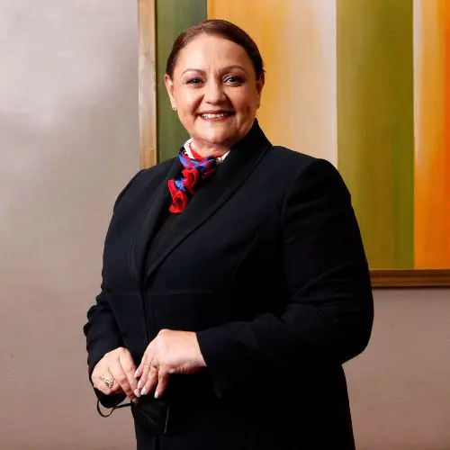
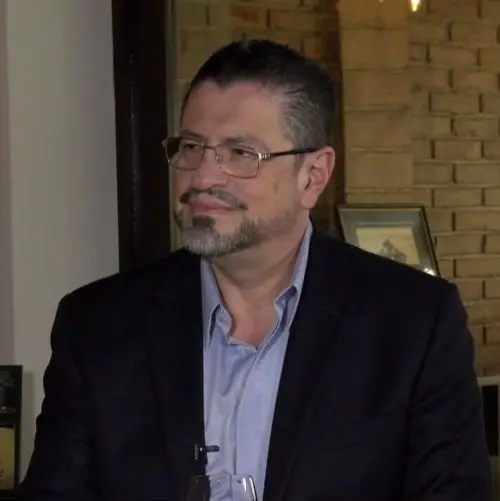

“El voto es el instrumento más poderoso jamás concebido por el hombre para derribar la injusticia y destruir las terribles paredes que encarcelan a hombres por ser diferentes de otros hombres.”Lyndon Baines Johnson

|
José María Figueres |
|---|---|
|  | Lineth Saborio |
|  | Rodrigo Chaves |
| Fabricio Alvarado |
| Bandera | Candidato | ULatina | CIEP |
|---|---|---|---|
| José María Figueres | 20,2% | 17% | |
| Lineth Saborio | 16,5% | 12,9% | |
| Rodrigo Chaves | 11,4% | 8,2% | |
|
|
Fabricio Alvarado | 10,8% | 10,3% |
Otros
-
¿Dónde votar?Consultar